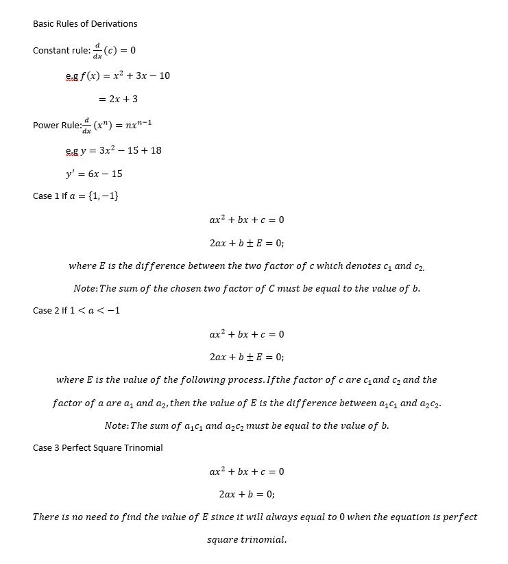
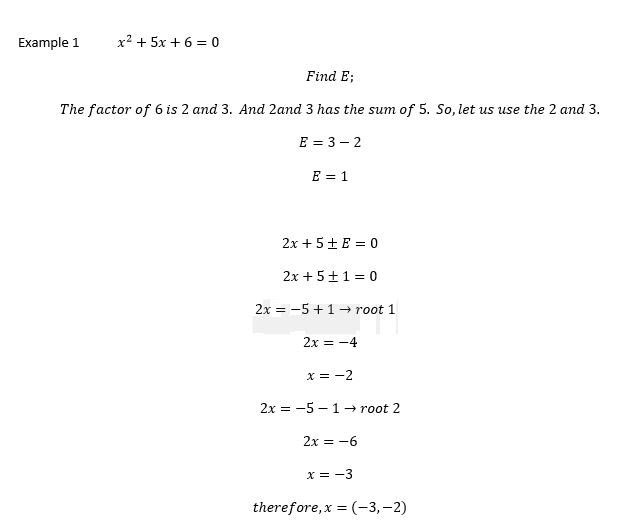
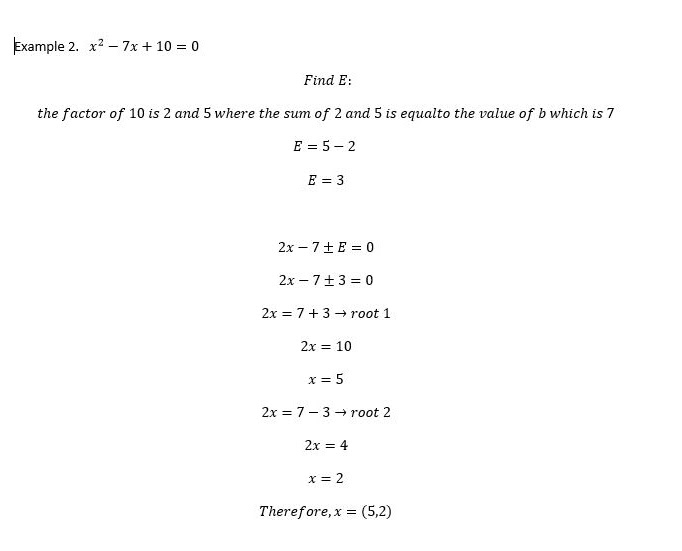
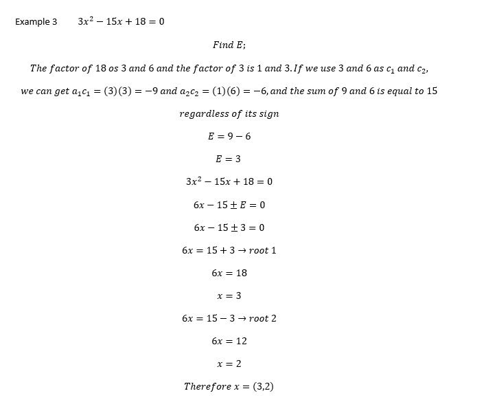
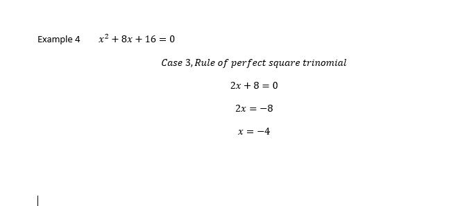

The Brief History of Quadratic Equation
The term "quadratic equations" originates from the Latin word "quadratus," meaning "square," indicating that these equations involve terms with squared variables. Hence, they are often referred to as "equations of degree 2." Throughout history, quadratic equations have played a significant role, with evidence of their practical applications dating back as early as 2050 BC. Mathematicians from various ancient civilizations, including Babylonia, Egypt, Greece, China, and India, employed geometric methods to solve quadratic equations. These early scholars laid the groundwork for future developments in quadratic equation solutions.
In the 12th century, in Spain, the Jewish mathematician Abraham bar Hiyya Ha-Nasi authored an essential European text that presented a comprehensive solution to general quadratic equations. His work marked a significant advancement in the understanding and application of quadratic equations in European mathematical thought. However, it wasn't until 1637 that René Descartes, in his seminal work "La Géométrie," consolidated and published the quadratic equation formulas that are still widely used today. Descartes' contributions provided a systematic framework for solving quadratic equations, establishing a cornerstone in the development of algebraic methods.
The evolution of quadratic equations spans millennia until now, with contributions from diverse mathematicians innovating the way for different algebraic techniques. The theory and practical applications to modern algebraic formulations, the journey of quadratic equations reflect the enduring quest for mathematical understanding and innovation throughout history.
Parts of Quadratic Equations
The theory and principles of quadratic equations form a fundamental part of algebra, dating back to ancient civilizations such as Babylonia and their contributions to mathematics. A quadratic equation is polynomial equation of degree 2, which means the highest power of the variable (usually denoted as x) is 2. Its general form is:
ax^2 + bx + c = 0
Where a, b, and c are constants, and if a ≠ 0 (if a = 0, the equation becomes linear), it is called a quadratic equation. Quadratic equations can be solved using various methods, including factoring, completing the square, using the quadratic formula, and graphing.
Discussion on an Alternative Method for Solving Quadratic Equations.




